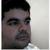
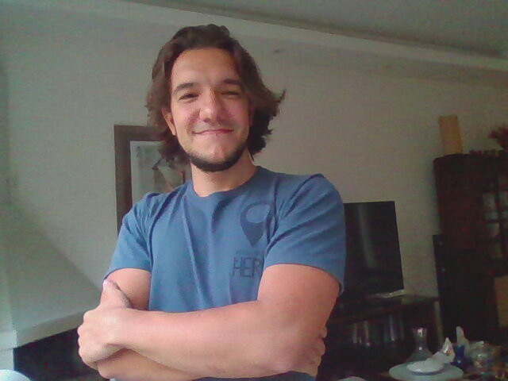
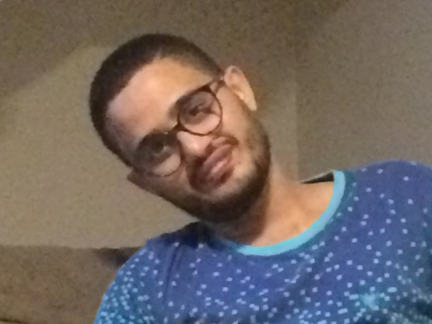
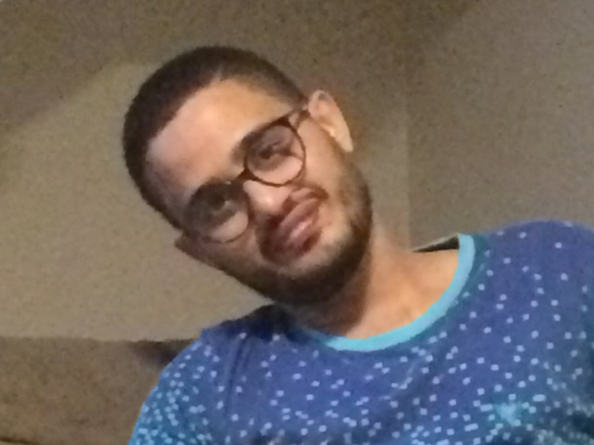

SHORT COURSES

Crysttian Paixão (Federal University of Santa Catarina, SC, Brazil).
Short Bio: Crysttian obtained a BSc in Computer Science, specialization in Linux Network Administration, and a PhD in Statistics and
Agricultural Experimentation at the Federal University of Lavras, MF, Brazil (2012). He did a post doc at the School of Applied Mathematics at Getulio
Vargas Foundation. Currently, Crysttian is a professor at the Federal University of Santa Catarina, and his research interests are within the areas of
Statistics, Computational Modeling and Artificial Intelligence.
Title: Implementation of web crawling processes
A big amount of the current knowledge is currently available on the internet. Since there is no standardization, it is necessary to develop techniques
that must be customized so that data can be collected and processed. Among the numerous methodologies there is the web crawler. The web crawler is a
software that performs a series of activities, which can be customized to perform the data collection. This short course aims to present some
methodologies for implementing different types of web crawlers to collect different kinds of information and perform preprocessing.
Marcus Nunes (Federal University of Rio Grande do Norte, RN, Brazil).
Short Bio: Marcus Nunes is an Assistant Professor at Federal University of Rio Grande do Norte (UFRN). Holding a PhD from Pennsylvania
State University, his main research interests are generalized linear models, big data, biostatistics, and statistics education. He is also the coordinator
of the Statistical Consulting Lab at UFRN, advising students to provide free statistical guidance to researchers from other areas.
Title: How to simplify your statistical reports using RMarkdown
This course will be a practical introduction on how to create a reproducible workflow using RMarkdown. The participants will see how they can create
tidy reports merging R code and their conclusions. There will be data analysis exercises where reports will be written by the participants,
showing them how to create their own reports.

Athos Damiani (IME and POLI, University of São Paulo, and Curso-R, SP, Brazil).
Short Bio: Athos obtained a BSc in Statistics from the IME and a MSc in Machine Learning from the POLI, both at the University of
São Paulo, SP, Brazil. He has worked with predictive modelling for ABJ, IBOPE, EDP, ClearSale and Itaú. Currently Athos is Data Scientist at Curso-R.
Title: My first dashboard with Shiny
This hands on workshop will guide the student into their first steps onto creation of interactive dashboards using R and Shiny.
An app for retrieve predictions from a machine learning model will be build throughout the class.
Makson Reis (Federal University of Bahia, BA, Brazil).
Short Bio: Makson Graduated in Library and Documentation and obtained a MSc in Knowledge Management from the Federal University of
Sergipe. Currently his PhD student in Information Science at the Federal University of Bahia. Some of his research projects are within the areas of
Librarianship, Data Science, Automation Systems, Cognitive and Computational Semiotics, Virtual Reality and Technological Aesthetics, and Scientific
Data Management. Makson’s Academic and Professional Blog can be found in: https://maksonreisblog.wordpress.com/
Title: Data literacy
Research Data Literacy aims to establish and disseminate among the event's participating community, training and literacy for data types,
data management, data treatments and data curation forms. Research data or scientific data are records, files or content in print or digital format
that contain results of research observations that may be shared among the academic community and may be contained in documents; laboratory minutes;
questionnaires and reports; tapes; CDs; DVDs; photographs; Slides; statistical data files; database contents (video, audio, text, images);
scripts and maps. With the ability to process, classify and filter large amounts of information, the professional should be able to search, filter
and process, as well as produce and synthesize data. The short course will enable the participant to know and understand the importance of management
and techniques used for their organization, with the aim of short course to improve skills and learning in the ecology of data science.
Everaldo Guedes (Federal University of Bahia, BA, Brazil).
Short Bio: Everaldo completed his PhD in Computational Modeling and Industrial Technology at SENAI CIMATEC (2012-2019).
He is currently Teaching Assistant at the Department of Statistics of the Federal University of Bahia and invited Professor of the Postgraduate
Program in Applied Statistics of the Jorge Amado University Center.
Title:An introduction to time series analysis with R
In this course, we will approach the time series analysis with R, covering topics such as: time series plotting, decomposition, simulation and
forecasting.
 

Lucas Mascarenhas Almeida and Tarssio Barreto (Federal University of Bahia, BA, Brazil).
Short Bio:
- Lucas is Intern at Braskem and Researcher of the Growing with Applied Modeling and Multivariate Analysis research group
(Gamma, www.gamma.ufba.br) at Federal University of Bahia (UFBA), undergraduating in Control and Automation Engineering (UFBA) and
electronics technician at Federal Institute of Bahia (IFBA). He develops research in areas of System Reliability Analysis and
Data Science.
- Tarssio is a PhD student at the Industrial Engineering Program in Federal University of Bahia, researcher of the Growing
with Applied Modeling and Multivariate Analysis research group (Gamma, www.gamma.ufba.br) at Federal University of Bahia (UFBA)
and content creator at Dadoscope Blog (Forúm Magazine). Comitted to machine learning studies with particular interest in
interpreting black box models, climate change and any sleep-taking challenge.
Title:Tidyverse: A data science introduction with R
Tidyverse is an ecosystem of R programming language packages designed for data science applications. The course is a brief dive into
this precious ecosystem. The course consists of four steps: An overview about the R world, data import using the "readr" and "readxl"
packages, data manipulation with pipe and the "dplyr" package and finally data visualization with the "ggplot2" package. Aims of the
course: Teaching fot the participants how to use the R for data science in a easily and clearly way.